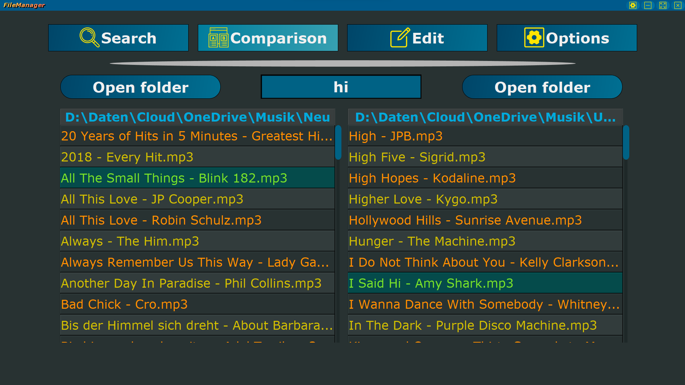
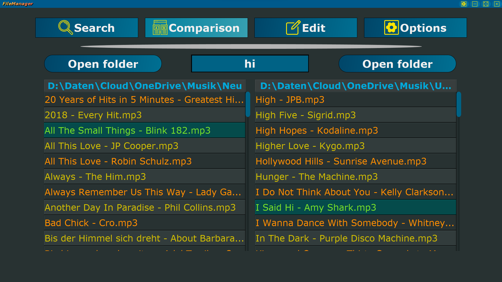

Job Scheduler
Der Job Scheduler ist ein Tool, mit dem Aufgaben ausgeführt werden. Es können Dateien, wie zum Beispiel Batch-Dateien ausgeführt oder andere Software
gestartet werden. Außerdem kann das Endgerät neugestartet oder heruntergefahren werden. Das alles kann zeitlich getaktet und geplant werden.
Es besteht die Möglichkeit Zeit-, Wochen- und Tagesintervalle vorzudefinieren, die dann automatisch, sofern der Job Scheduler gestartet ist,
ausgeführt werden. Es ist ein nützliches Tool um routinierte Aufgaben automatisiert zu wiederholen.
Diese Software hat dein Interesse geweckt?
Dann downloade es doch ganz einfach und komplett kostenlos hier !
#jobscheduler #tasks #automatisiert #timemanagement #free
Evil One
Evil One ist ein einfaches Würfelspiel, bei dem Du volles Risiko oder auf einem sicheren Weg spielen kannst. Das Ziel
des Spiels ist es, eine bestimmte Punktzahl zu erreichen, mit nur einem Würfel.
Jeder Spieler kann pro Runde beliebig oft würfeln. Aber vorsicht! Wenn Du eine 1 würfelst bekommst Du für diese Runde
keine Punkte. Riskierst Du alles oder nichts?
Dieses Spiel hat dein Interesse geweckt?
Dann downloade es doch ganz einfach und komplett kostenlos hier !
#evilone #game #multiplayer #singleplayer #dice #risk #free
Random Generator
Mit diesem Programm kannst Du eine Zufallszahl oder ein zufälliges Passwort generieren. Oder Du nutzt die "A oder B"
Möglichkeit, um eine Entscheidung zu treffen. Wenn Du zufällig gewählte Lottozahlen oder einen Würfel benötigst oder
eine Wortliste (mit Beispiel Namen) durchmischen möchtest, dann ist der Random Generator genau das Richtige für Dich.
Dieses Programm hat dein Interesse geweckt?
Dann downloade es doch ganz einfach und komplett kostenlos hier !
#randomgenerator #software #random #password #dice #free
Simon Click
Simon Says ist ein beliebtes Spiel, gerade bei Kindern. Simon Click bietet verschiedene Schwierigkeiten an, um
das Gehirn zu fordern. Schaffst Du deinen persönlichen Rekord zu überbieten?
Dieses Spiel hat dein Interesse geweckt?
Dann downloade es doch ganz einfach und komplett kostenlos hier !
#simonclick #game #braintraining #singleplayer #logic #remember #free
Tower Of Hanoi
Schaffst Du es, den Turm von dem linken Stapel auf den rechten zu projizieren, wenn du immer nur 1 Klotz des
Turms bewegen darfst? In 3 verschiedenen Schwierigkeitsstufen wird dein Denkvermögen getestet und deine benötigte
Zeit und verwendeten Züge gemessen.
Dieses Spiel hat dein Interesse geweckt?
Dann downloade es doch ganz einfach und komplett kostenlos hier !
#towerofhanoi #game #braintraining #singleplayer #logic #free
Shutdown Manager
Du willst deine Lieblingsserie schauen bis Du eingeschlafen bist, aber dein Laptop soll nicht die ganze Nacht
an sein?
Kein Problem mit dem Shutdown Manager. Mit einem Klick den Rechner neustarten oder herunterfahren.
Alternativ kannst Du einen Timer stellen, wann dein Laptop herunterfahren / neustarten soll.
Dieses Programm hat dein Interesse geweckt?
Dann downloade es doch ganz einfach und komplett kostenlos hier !
#shutdownmanager #software #shutdown #restart #timer #free
OneSound-MP
Dieser Musik-Player sammelt alle deine lokalen Lieder aus verschiedenen Verzeichnissen, so das alle deine
Lieblingssongs an einem Ort zu finden sind. Über eine Suchfunktion kann der passende Song gefunden und abgespielt
werden. Natürlich können auch einzelne Ordner abgespielt oder eigene Playlisten erstellt werden.
Damit Du deine zuletzt gespielten Lieder schnell wiederfindest, werden diese in eine Liste gespeichert und sind so
leichter wiederzufinden.
Dieses Programm hat dein Interesse geweckt?
Dann downloade es doch ganz einfach und komplett kostenlos hier !
#onesound-mp #software #music #playlist #play #free #useful
File Manager
Dieses Tool ermöglicht dir nach Dateien aus mehreren Verzeichnissen gleichzeitig, schnell und effizient zu suchen.
Ordnerinhalte können abgeglichen werden und Dateien direkt innerhalb der Software umbenannt werden.
Entweder einzelne oder mehrere Dateien gleichzeitig, von Hand oder per zuvor definierten Regeln.
Filter nach Dateiendungen und Verzeichnissen optimieren die Suche.
Dieses Programm hat dein Interesse geweckt?
Dann downloade es doch ganz einfach und komplett kostenlos hier !
#filemanager #software #comparison #edit #files #free #useful
Vacuum Cleaner Simulator
Ein einfacher Simulator, in dem man einen Staubsauger steuert und den Boden reinigen muss.
Wenn der Boden erfolgreich gereinigt wurde, hat man den Level geschafft. Es gibt verschiedene Grafiken zur Auswahl,
um das Spiel etwas abwechselungsreicher zu gestalten.
Dieses Spiel hat dein Interesse geweckt?
Dann downloade es doch ganz einfach und komplett kostenlos hier !
#vacuumcleaner #game #singleplayer #clean #trash #trashbin #simulator #free
War And Peace
Ein einfaches Einzelspieler Kartenspiel zum Zeitvertreib. Die obersten Karten von zwei Kartenstapeln werden
verglichen. Die höhere Kartenpunktzahl gewinnt und erhält beide Karten.
Wer zuerst alle Karten besitzt, gewinnt!
Dieses Spiel hat dein Interesse geweckt?
Dann downloade es doch ganz einfach und komplett kostenlos hier !
#warandpeace #game #singleplayer #cards #classic #free
Pong
Ein weiteres beliebtes 2D-Spiel mit einfacher Spielmechanik. Auch hier kannst du dich gegen
deine Freunde batteln, sowie gegen einen NPC spielen. Grundsätzlich können verschiedene Einstellungen
getroffen werden, um das Spielerlebnis individuell anzupassen. Dadurch wird das Spiel vielseitiger
gestaltet. Außerdem warten verschiedene Items und zwei weitere Spielmodi auf dich!
Dieses Spiel hat dein Interesse geweckt?
Dann downloade es doch ganz einfach und komplett kostenlos hier !
#pong #game #singleplayer #multiplayer #classic #gamemodes #items #free
Rock Paper Scissors
Ebenfalls ein Klassiker, mit simplen Spielprinzip. Du hast die Wahl zwischen verschiedenen Symbolen.
Die Symbole gewinnen beziehungsweise verlieren gegen andere Symbole. Triffst du die richtigen Entscheidungen
und kannst gegen den NPC gewinnen?
Dieses Spiel hat dein Interesse geweckt?
Dann downloade es doch ganz einfach und komplett kostenlos hier !
#rockpaperscissors #game #singleplayer #classic #free
Yahtzee
Yahtzee - auch Kniffel genannt - ist ein simples Würfelspiel, das sich sehr gut zum Spielen mit den
Freunden oder der Familie eignet. Bei diesem Klassiker muss man mit 5 Würfeln bestimmte Zahlen oder
Zahlenrreihenfolgen erzeugen. Wer am Ende die meisten Punkte hat, gewinnt!
Dieses Spiel hat dein Interesse geweckt?
Dann downloade es doch ganz einfach und komplett kostenlos hier !
#yahtzee #game #singleplayer #multiplayer #dicegame #familyfriendly #free
Destroy The Numbers
Destroy The Numbers ist ein Spiel bei dem die Aufgabe darin besteht das Spielfeld solange wie möglich
frei zu halten. Um dies zu erreichen müssen Zahlen kombiniert werden. Das klingt auf den ersten Blick einfach,
doch die Schwierigkeit steigt im Laufe der Runde. Natürlich gibt es auch Hilfitems, die Dir helfen werden länger
durchzuhalten, doch alles hat seinen Preis!
Dieses Spiel hat dein Interesse geweckt?
Dann downloade es doch ganz einfach und komplett kostenlos hier !
#destroythenumbers #game #singleplayer #logic #reaction #skill #free
Train Your Brain
Täglich sollte das Gehirn ein bisschen gefordert werden. Aus diesem Grund gibt es dieses Gehirn-Trainings-Spiel,
bei dem täglich und zugleich spielerisch das Gehirn trainiert werden kann.
Es gibt Tagesherausforderungen und ein Levelsystem. So macht Gehirntraining einfach nur Spaß!
Hinweis: Es werden neue Level hinzugefügt, damit eine Abwechslung der Level erhalten bleibt.
Dieses Spiel hat dein Interesse geweckt?
Dann downloade es doch ganz einfach und komplett kostenlos hier !
#trainyourbrain #game #braintraining #singleplayer #logic #level #free
Tic-Tac-Toe
Tic-Tac-Toe, ein sehr einfaches Spiel, das dennoch Spaß macht und nie langweilig wird.
Trete gegen deine Freunde an! Oder spiele gegen einen NPC.
Wer als erstes 3 in einer Reihe hat gewinnt!
Dieses Spiel hat dein Interesse geweckt?
Dann downloade es doch ganz einfach und komplett kostenlos hier !
#tic-tac-toe #game #classic #singleplayer #multiplayer #free
Game Of Life
Game Of Life ist ein Spiel mit simplen Regeln. Es ist ein 2D-Spiel bei dem der Nutzer eigene Konstellationen
oder auch bereits vorgefertigte Konstellationen animieren kann. Das Spielfeld besteht aus Zellen, die sterben,
beziehungsweise (wieder-) belebt werden können. So ist es möglich ganz einfach Animationen erstellen zu können.
Dieses Spiel scheint auf den ersten Blick nicht vielseitig, allerdings enthält das Spiel eine Menge weitere
Features, die dem Spiel eine gewisse Variarität mitgeben, wodurch das Spiel immer wieder neu entdeckt werden
kann und nie langweilig wird.
Dieses Spiel hat dein Interesse geweckt?
Dann downloade es doch ganz einfach und komplett kostenlos hier !
#gameoflife #game #singleplayer #animation #creative #ownconstellations #free
Clock
Alarm Clock ist, wie es der Name schon verspricht ein Wecker, der (neben der Weckfunktion und der Uhrzeitanzeige)
auch einen Timer und eine Stoppuhr enthält.
Als Features kann der Nutzer die Farbe des Displays ändern, genauso wie seinen eigenen Wecksound
einbinden und vieles mehr.
Dieses Programm hat dein Interesse geweckt?
Dann downloade es doch ganz einfach und komplett kostenlos hier !
#alarmclock #software #clock #timer #stopwatch #ownsound #free #useful
Counter
Counter ist, wie es der Name schon verspricht, ein Zähler, der hochzählen, als auch runterzählen kann.
Die Zahl wird beim Schließen des Programmes erhalten bleiben. Ein kleines aber feines Programm um das
Zählen zu erleichtern.
Dieses Programm hat dein Interesse geweckt?
Dann downloade es doch ganz einfach und komplett kostenlos hier !
#counter #software #free #useful